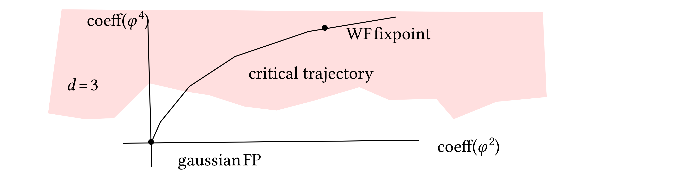

INI Seminar 20180928 Hara
No-Go theorems in \(\Phi^4_d\) for \(d \geqslant 4\)
Relevant literature:
Aizenmann, CMP 86 (1982)
Fröhlich, Nucl.Phys. B200 (1982) 281
Sokal AIHP 37 (1982) 317 [very interesting paper]
Book “Random walks, Critical phenomena and triviality in QFT” by Fernandez, Frölich, Sokal.
Triviality will be discussed in the context of lattice regularization. Let \(\varepsilon\) be the lattice spacing. We are going to let \(\varepsilon \rightarrow 0\) and try to get a continuum QFT on \(\mathbb{R}^d\). There are two scales, the continuum distance and that on the lattice, this last is naturally measure in terms of lattice spacings. We write \(x \in \mathbb{Z}^d\) for the lattice variable and \(\tilde{x} \in \mathbb{R}^d\) the continuum variable. The connection between the two variables is \(x = [\tilde{x} / \varepsilon]\) where \([\cdot]\) is some way to get the integer part of a vector in \(\mathbb{R}^d\).
Consider a field \(\varphi : \Lambda \rightarrow \mathbb{R}\) one component model and \(\Lambda\) is a finite portion of \(\mathbb{Z}^d\). \(\varphi = (\varphi_x)_{x \in \mathbb{Z}^d}\) and define
with
where \(J_{\varepsilon} \geqslant 0\), \(\lambda_{\varepsilon} \geqslant 0\) and \(\mu_{\varepsilon} \in \mathbb{R}\). We also define \(\langle \cdots \rangle_{\mathbb{Z}^d} = \lim_{\Lambda \nearrow \mathbb{Z}^d} \langle \cdots \rangle_{\Lambda}\). Typical observable are of the form of \(n\)-point functions: \(\langle \varphi_{x_1} \varphi_{x_2} \cdots \varphi_{x_n} \rangle_{\mathbb{Z}^d}\). And we define also
maybe along a subsequence \((\varepsilon_n)_n\). The lattice spin system is reflection positive, etc.. and therefore the limiting system of correlation functions \(S\) is expected to satisfy all the Osterwalder–Schrader axioms (except maybe for rotation invariance).
We would like to choose the parameter in such a way to get an interesting continuum limit (non–Gaussian). The triviality problem is to understand if this is possible at all.
The correlations functions has to behave in nice ways. For example the two point function has to behave well and decay fast enough but on macroscopic scales. So we need to adjust the parameters in such a way that the spin system approach a critical point where correlation lenght diverges (this will allow to keep it finite on macroscopic scales).
Belief: is not possible to arrange things so to obtain a non-trivial limit for the spin system when \(d \geqslant 4\): any adjustement of \(J_{\varepsilon}, \mu_{\varepsilon} {,} \lambda_{\varepsilon}\) will not lead to non-Gaussian continuum limit.
We restrict our considerations to subset of parameters which remains in the high–temperature region (this includes the neighborhood of the phase transition point).
Triviality for lattice regularisation has been proven for \(d > 4\) via correlation inequalities. For \(d = 4\) the situation is strange. We can exclude a lot of possibilities but there is still a gap and the question is still open.
Ingredients:
Infrared bounds (reflection positivity)
Aizenmann–Fröhlich inequalities
(a) Infrared bounds:
This is a real space version of the Fourier space bounds \(0 \leqslant \hat{G} (p) \lesssim | p |^{- 2}\).
so we need to require that this is nontrivial since all the correlation functions can be bounded by products of \(2\)-pt functions (by correlation inequalitites). This means that
Remark
(b) The cumulant
is bounded by
The corrections terms are not relevant in the critical regime. So we are going to neglect them.
Triviality follows: If
then higher order cumulants \(U_n\) are also zero (this is a classical result). So we can restrict considerations to the \(4\)-pt functions.
Let us restict to the massive case, namely when
for some \(m_p > 0\). Let us consider the renormalized adimensional coupling constant. Introduce
and
and let
here \(\xi_{\varepsilon}\) is the lattice correlation lenght. By Aizenmann–Frölich inequality
Using reflection positivity/infrared bounds and spectral representation one can establish that
(see Sokal's paper). Plugging this into our bound for \(g_{\text{ren}, \varepsilon}\) we get
But for the continuum limit we must have \(\xi_{\varepsilon} \rightarrow \infty\) since \(\xi_{\varepsilon}\) is measured in lattice spacing units.
This concludes the proof of triviality when \(d > 4\).
When \(d = 4\) we need to look at different arguments. Recall AF inequality:
An improvement of this inequality looks like this:
In our particular case we have to take \(J_{u, v} = J_{\varepsilon} \mathbb{I}_{| u - v | = 1}\). (otherwise the inequality is rather general).
Using this we have, in \(d = 4\):
It is widely believed that in \(d = 4\) \(\chi \sim (J_c - J)^{- 1} | \log (J_c - J) |^{1 / 3}\) near the critical point and this says that \(\left| \frac{\partial \chi}{\partial J} \right|\) goes to zero logarithmically which would suggest also triviality in \(d = 4\).
Block spin transformation: we group lattice points in blocks of side \(L\). Define block spins
if \(\varphi \sim \rho_{\Lambda} = e^{- H_{\Lambda}}\) then we want to consider the marginal law of \(\varphi'\) and repeat the transformation to track the law of large scale fluctuations.
From the lattice of size \(\varepsilon\) we do \(n\) block spin transformation to obtain a lattice of size \(\varepsilon L^n \approx 1\). Let \(\rho'_{\Lambda}\) the distribution of \(\varphi'\) and \(\rho^{(n)}\) the law of the \(n\)-th iterated block spin variable \(\varphi^{(n)}\) (with \(\varphi^{(1)} = \varphi'\)).

If we have this kind of structure then we are in a very nice situation where one can iterate infinitely many times the RG transformation and have a control of a non–gaussian theory sitting on the critical line. (non-perturbative regime is the red part)
In \(d = 4\) the situation is different since the gaussian FP is attractive in all directions but in the \(\varphi^2\) so in order to construct a non–trivial limit we need to start much away from the fixpoint, well into the non–perturbative regime.
[Missing some remarks I didn't had time to write down here]
Hara, Hatori, Watanabe, CMP (2001). Start from Ising model (\(\lambda = \infty\) with interaction \(\lambda (\varphi^2 - S^2)^2\)) in the hierarchical approximation and using a computer assisted proof one can see that the Gaussian fixpoint attracts the original interaction (it needs \(\approx 100\) iterations to get perturbative)
Is seems implausible to have a fixpoint which is very far from the Gaussian fixpoint and in the perturbative region is clear that there is no possibility to have a non-gaussian limit point for the lattice models.